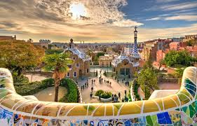
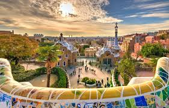

Barcelona is a city on the coast of northeastern Spain.
It is the capital and largest city of the autonomous community of Catalonia, as well as the second most populous municipality of Spain. With a population of 1.6 million within city limits,its urban area extends to numerous neighbouring municipalities within the Province of Barcelona and is home to around 4.8 million people,making it the fifth most populous urban area in the European Union after Paris, the Ruhr area, Madrid, and Milan.
It is one of the largest metropolises on the Mediterranean Sea, located on the coast between the mouths of the rivers Llobregat and Besòs, and bounded to the west by the Serra de Collserola mountain range, the tallest peak of which is 512 metres (1,680 feet) high.
Founded as a Roman city, in the Middle Ages Barcelona became the capital of the County of Barcelona.
After joining with the Kingdom of Aragon to form the confederation of the Crown of Aragon, Barcelona, which continued to be the capital of the Principality of Catalonia, became the most important city in the Crown of Aragon and the main economic and administrative centre of the Crown, only to be overtaken by Valencia, wrested from Arab domination by the Catalans, shortly before the dynastic union between the Crown of Castile and the Crown of Aragon in 1492.
Barcelona has a rich cultural heritage and is today an important cultural centre and a major tourist destination.
Particularly renowned are the architectural works of Antoni Gaudí and Lluís Domènech i Montaner, which have been designated UNESCO World Heritage Sites.
The city is home to two of the most prestigious universities in Spain: the University of Barcelona and Pompeu Fabra University. The headquarters of the Union for the Mediterranean are located in Barcelona.
The city is known for hosting the 1992 Summer Olympics as well as world-class conferences and expositions and also many international sport tournaments.

 
